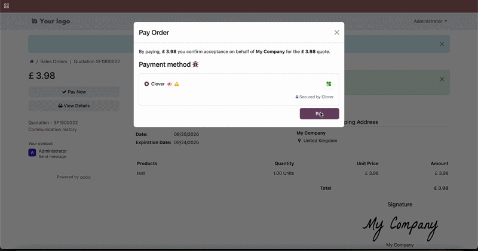

Clover E-Commerce/Online Payments Official Integration
Start accepting e-commerce and virtual terminal payments effortlessly with Clover
Accept card payments on your Odoo website, send payment links from sales orders and invoices, take payments with the built-in Virtual Terminal, and process refunds — all from one integration.
As a Clover partner, we offer:
Premium rates for new customers
Attractive opportunities for Odoo partners
Free setup assistance — including API keys and secrets generation
Contact us for more information on our email: support@sns-software.com

Features
- Online Checkout — Accept Clover payments on your Odoo e-commerce / website payment form
- Payment Links — Generate and send payment links from sales orders and invoices
- Virtual Terminal — Take card payments directly from sales orders and invoices inside Odoo
- Refunds — Process full or partial refunds against completed Clover payments
Installation
- Upon clicking the 'Download' button on the app, you will receive the link to download the zip file of the module.
- Extract the file on your system after the download finishes. You will be able to see a folder named 'payment_neatclover'.
- Copy and paste this folder inside your Odoo Add-Ons path.
- Now, open the Odoo App and click on the Settings menu. Scroll to the very bottom of settings. Here, click on Activate the "Developer Mode".
- Then, open the Apps menu and click on the top bar ‘Update Apps List’.
- In the search bar, remove all the filters and search 'Clover'.
- You will be able to see the module 'Payment Provider: Clover' in the search result. Click on ‘Install’ to install it.
Setup
Setup is done once on the Clover payment provider. After that, online checkout, payment links, Virtual Terminal, and refunds all work from the same configuration.
- In Odoo go to Settings → Payments → Payment Providers and select Clover.
- There are 3 states available (Disabled, Enabled, Test Mode). Select Enabled if you are looking to go live, or Test Mode if you first want to run a test payment and change it later to Enabled for live.
- You will need an Activation Code for this module. Click the "Get a free activation code" link and fill out the form, or contact us at support@sns-software.com. Once you reach out for a license key, we will also help you with the full setup — including generating the API keys and secrets — free of charge.
- Enter your Clover Store ID, Public Key, and Private Key (we will help you obtain and enter these during setup).
- The Odoo Server URL is your current Odoo website domain which you see at the top of the browser. It should be automatically filled but if not just copy it from your browser. Example: https://www.example.com
- Select a Fallback Failure User. This user should be someone responsible to whom we are going to generate an activity for a Sale Order payment issue if there is no responsible user for the given Sale Order.
- Save your changes.
- You are now ready to take your first payments via online checkout, payment links, or the Virtual Terminal!
- Tip: Remember to configure your journals accordingly as well as your outstanding receipts account (in order to have your invoices in state "Paid" rather than "In Payment").
Support
Email: support@sns-software.com